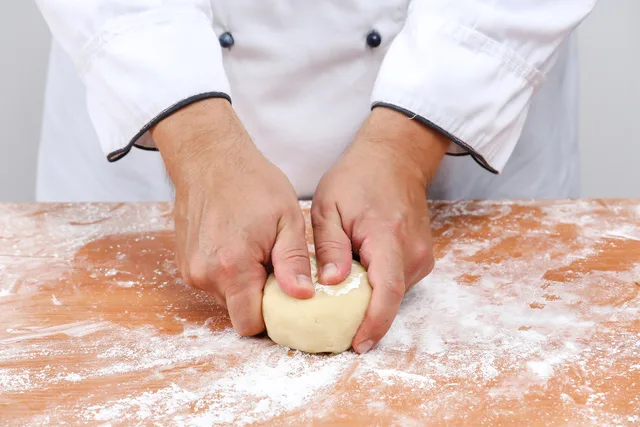
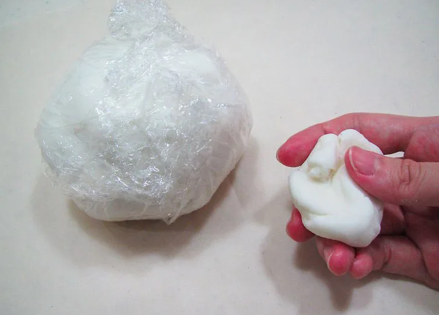
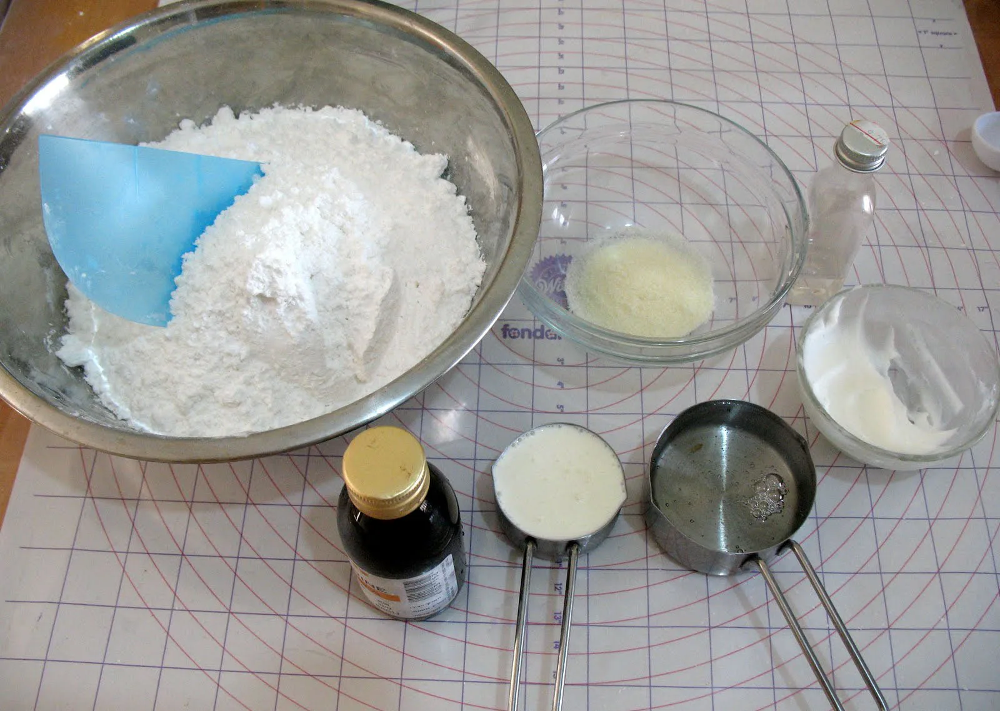
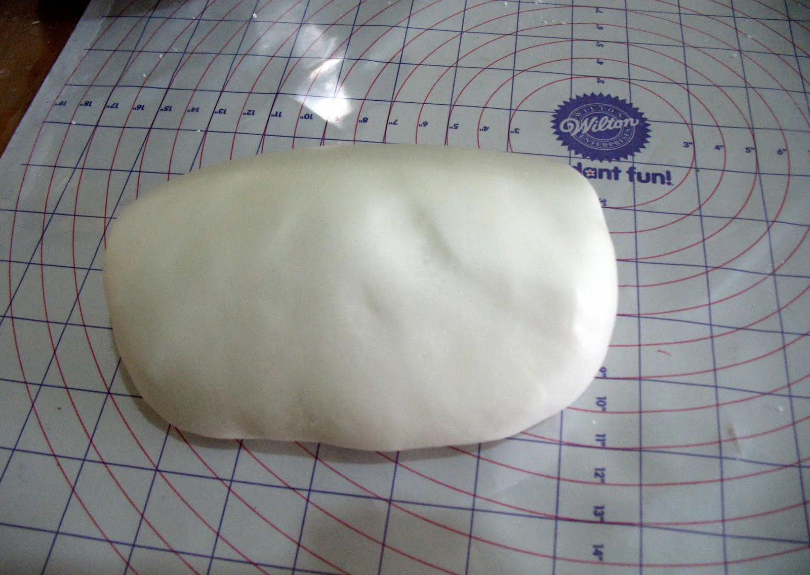
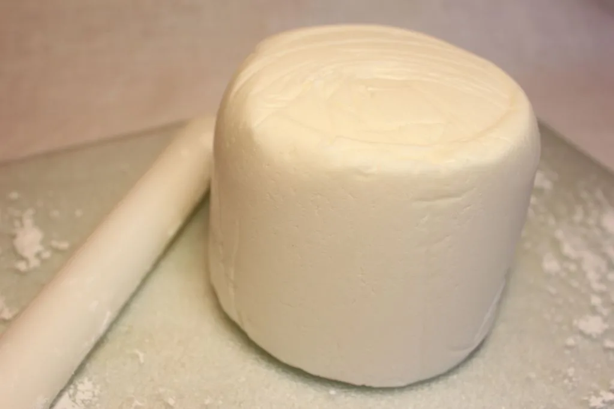
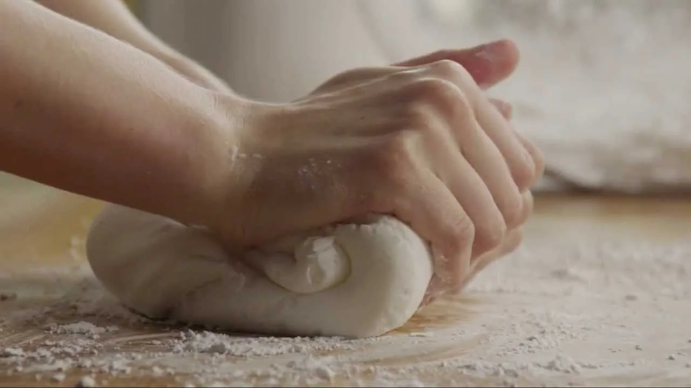
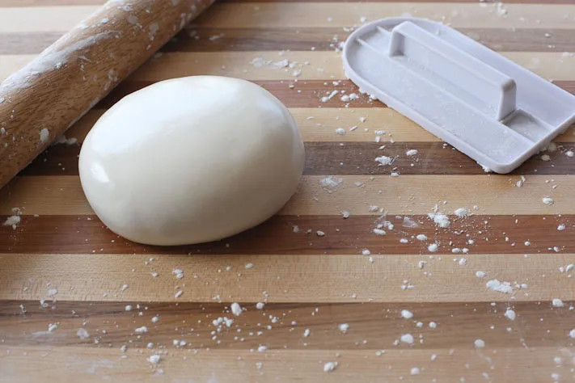
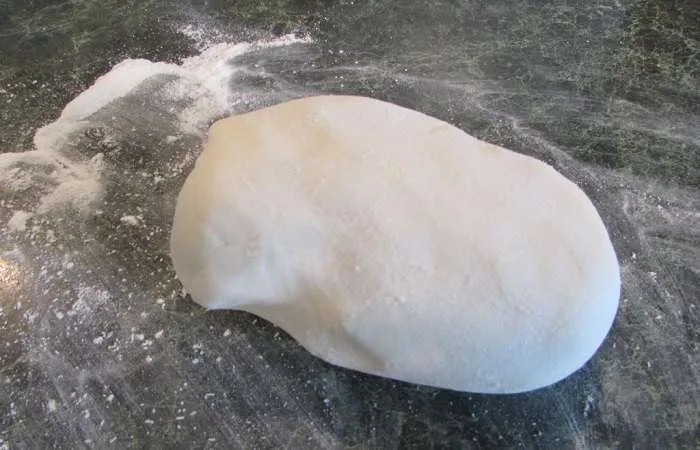
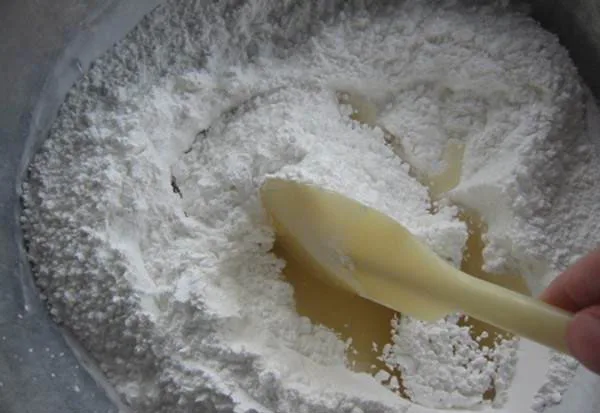

Прежде чем мы перейдем к подробному разбору вопроса о том, как сделать сахарную мастику в домашних условиях, хотелось бы кое-что отметить. Она отлично подойдет для лепки съедобных фигурок и элементов оформления, также ей можно полностью обтянуть кондитерское изделие.
Сахарную мастику в домашних условиях можно приготовить несколькими способами: из сахарной пудры, желатина, сгущенного молока, глюкозы, патоки или крахмала. Более мягкие варианты подходят для обтяжки торта, а плотные и хорошо держащие форму — для лепки фигурок и цветов.
Полезно знать!
Мастика выполняет не только декоративную функцию. Также с ее помощью можно скрасить шероховатости и неровности приготовленного торта.
Какую мастику выбрать для торта и фигурок
Для обтяжки торта нужна мягкая и эластичная мастика, которая легко раскатывается и не рвется. Для фигурок и цветов лучше использовать более плотную массу: она должна сохранять форму после лепки и не расплываться.
Есть 4 компонента – быть украшению
Приготовление сахарной мастики не займет много времени. Она имеет эластичную текстуру, в умелых руках становится нежной и хорошо лепится.
Приведем два самых распространенных варианта.
Рецепт сахарной мастики для обтяжки торта или лепки фигурок №1.

Вам понадобятся:
- сухое молоко – 200 г;
- сгущенное молоко – 275 г;
- мелкая, хорошо просеянная сахарная пудра – 200 г;
- лимонный сок – 2,5 столовых ложки.
Смешайте сухое молоко и сахарную пудру, добавьте сгущенку и лимонный сок. На выходе должна получиться тягучая смесь.
Рецепт №2.

Будут нужны:
- желатин – 20 г;
- холодная вода – 9 столовых ложек;
- сок половинки лимона;
- просеянная через мелкое ситечко сахарная пудра (добавляйте по мере эластичности массы).
Замочите желатин до набухания. Растопите его в СВЧ или на водяной бане, но не доводите жидкость до кипения. Процеженную и остуженную желатиновую «воду» соедините с сахарной пудрой, тщательно перемешайте. В получившуюся однородную массу добавьте сок лимона.
Масса для покрытия

Рецепт приготовления сахарной мастики не ограничивается только вышеперечисленными ингредиентами и действиями. Рассмотрим и другие рекомендации по приготовлению вкусных украшений. В частности, приведем рецепт для покрытия торта.
Понадобятся:
- хорошо просеянная сахарная пудра – 500 г;
- желатин – 12 г (веществу нужно дать набухнуть в холодной воде);
- кокосовый жир – 2 чайных ложки;
- бесцветный сироп (к примеру, кукурузный) – 80 г;
- лимонный сок – 1 чайная ложка;
- яичный белок – от 1 яйца.
Поставьте набухший желатин с кокосовым жиром на паровую баню или отправьте в СВЧ. После растворения желатина влейте сироп и хорошо размешайте. Получившуюся смесь добавьте в пудру с белком. Вымешивайте до образования однородной массы. Чудесная мастика своими руками из сахарной пудры готова.

На видео можно посмотреть процесс приготовления такой мастики. В общем действия одинаковые, но рецепт несколько отличается.
Это важно!
Если вы – начинающий кулинар, лучше для первого раза в качестве основного ингредиента использовать маршмеллоу, сгущенное молоко или желатин: они являются более мягкими и не будут сильно крошиться при нарезке угощения.
Эластичная масса с большим сроком годности

Следующий рецепт мастики из сахарной пудры используется кондитерами, экономящими свое время. Эта заготовка для декораций отлично сохраняется в герметичных полиэтиленовых пакетах. Делают сладкую эластичную мастику из сахара так: 7 г желатина залейте 80 мл воды и оставьте до набухания минут на 40. Получившуюся смесь растворите на водяной бане или в СВЧ. Добавьте 1 столовую ложку мягкого маргарина и 2 столовых ложки глюкозы. Начните подмешивать пудру. Когда масса начнет густеть, продолжите ее вымешивание на столе.
Сахарная паста

Нужна сахарная паста для торта? В англоязычных странах она называется sugar paste. Или вы хотите скатать съедобные шарики и выдавить с помощью формочек геометрические фигурки? Смешайте 20 г просеянной пудры с 50 г растительного маргарина и 1 столовой ложкой меда. По желанию можно добавить искусственные или натуральные красители (какао-порошок даст коричневый цвет, свекольный или клюквенный сок – красный, шпинат – зеленый, активированный уголь – черный).
Скатайте получившуюся смесь в мастичный шар и отправьте на хранение в холодильник или морозильную камеру. Перед использованием комок следует разморозить.
Рецепт на патоке

Если вы решили слепить вкусные цветы, то для этих целей лучше использовать мастику на патоке. Вам потребуется 10 г желатина и 150 г холодной воды (соедините и дайте веществу набухнуть, растопите на паровой бане). Когда горячая жидкость будет приготовлена, влейте ее в углубление горки пудры (сколько возьмет), добавьте эссенцию и перемешайте до образования однородной сероватой массы, добавляя сахар, если нужно.
С крахмалом

Сахарно-крахмальная мастика также пользуется спросом в использовании. Приготовить ее можно из кукурузного крахмала, лимонной кислоты и пудры (800 г). Доведите до кипения растворенную в стакане воды щепотку лимонной кислоты. Заварите крахмал (200 г на 4 ст.л. холодной воды) с кислотой. Подмешивайте в получившуюся смесь пудру. На выходе должна получиться пластилинообразная масса.
Заварная мастика

Для красивой отделки тортиков, пряников и кексов используют такой простой рецепт сахарной мастики. В домашних условиях сахарно-заварная смесь готовится очень легко. Вскипятите 200 г воды и 85 г патоки. Добавьте 100 г кукурузного крахмала и 700 г пудры. Мешайте до образования однородной массы (должна напоминать пластилин). Эта мастика для торта из сахарной пудры отличается особой пластичностью, и из нее можно сотворить настоящие кулинарные шедевры.
Заключение
Какую бы вы разновидность рецепта ни выбрали, не забывайте о правильном хранении заготовки. Материал имеет свойство быстро засыхать на открытом воздухе, поэтому его лучше плотно оборачивать пищевой пленкой и на время неиспользования класть в холодильник, а готовые фигурки следует оставлять в закрытых контейнерах.